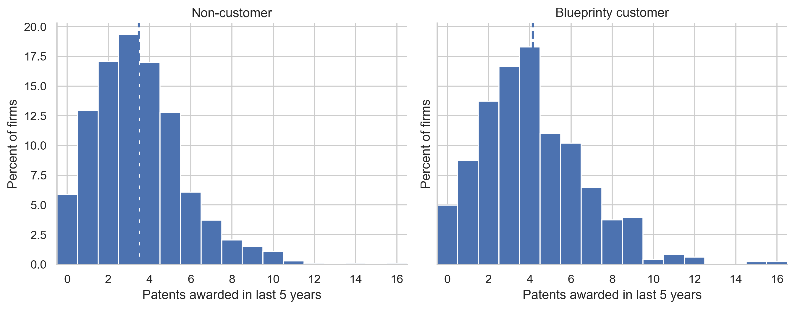
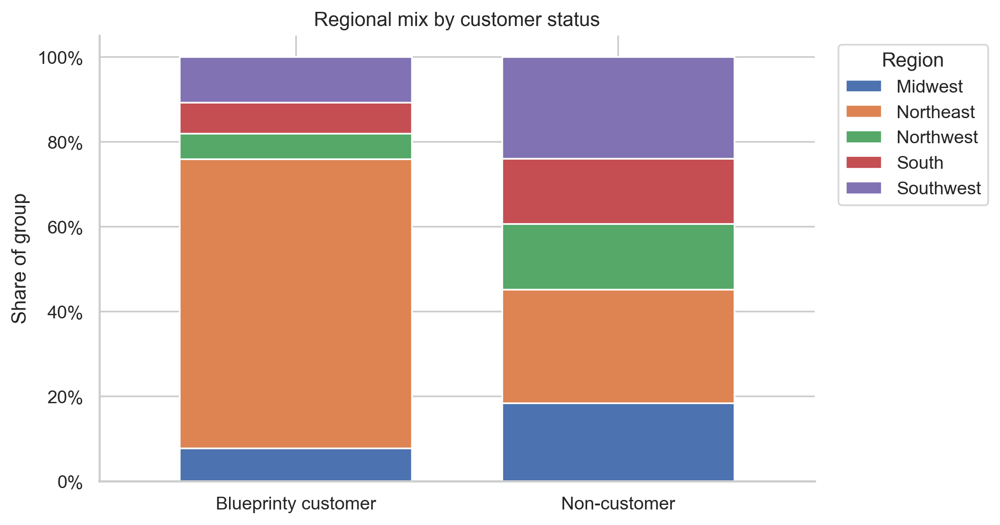
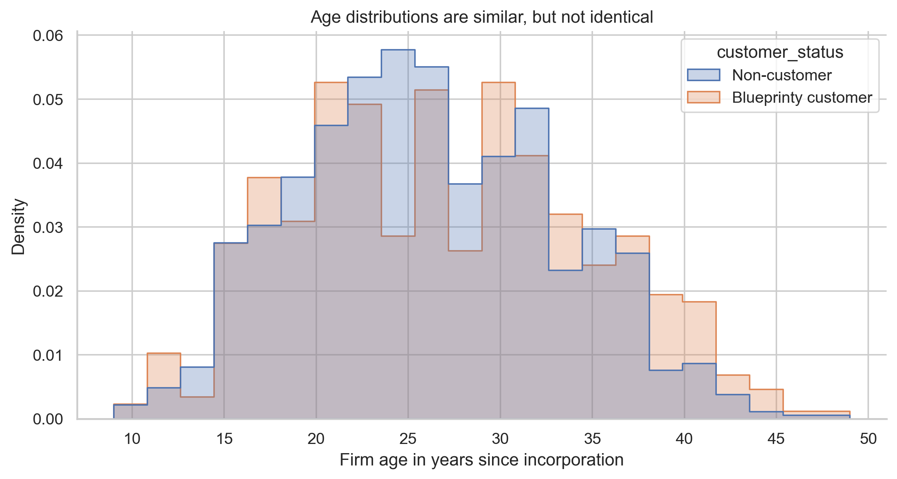
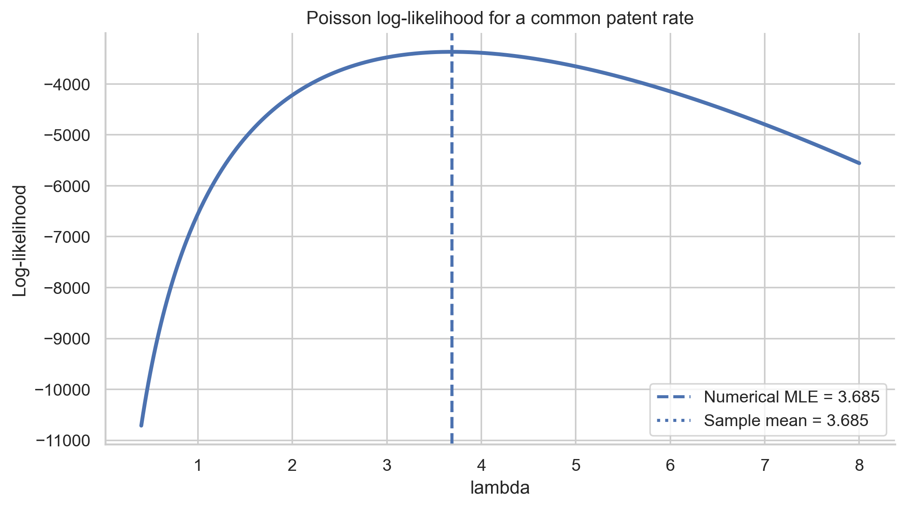
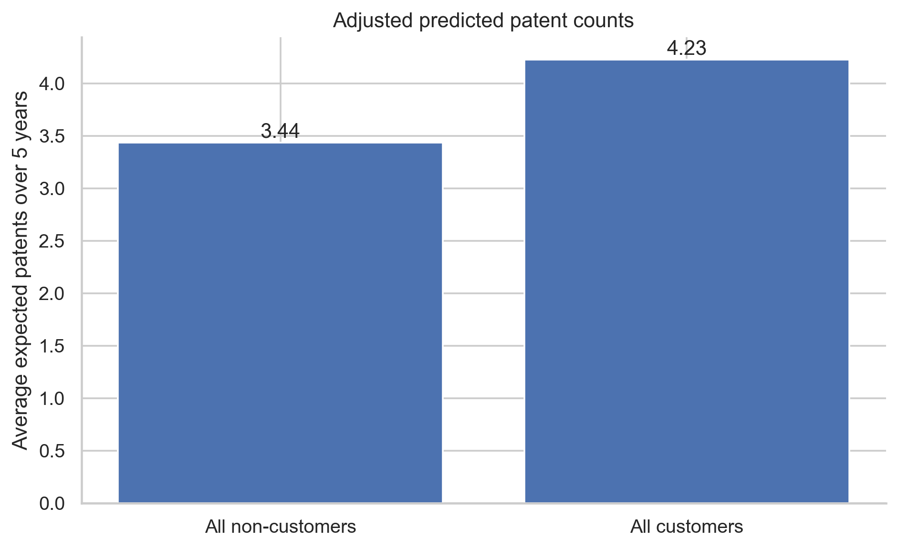
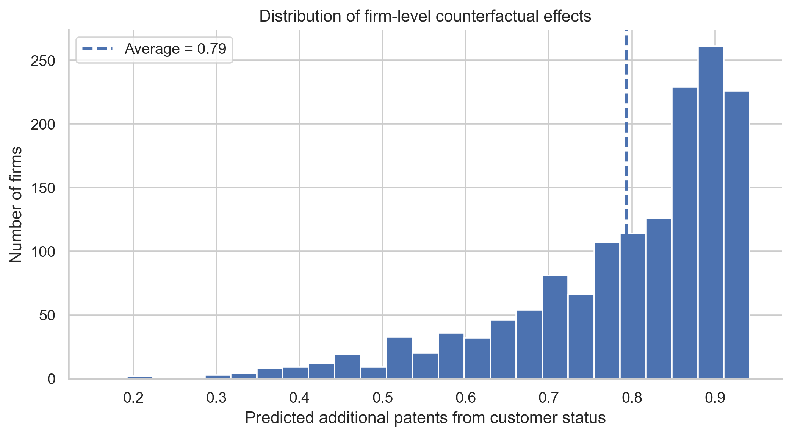

| customer_status | firms | mean_patents | median_patents | sd_patents | mean_age |
|---|---|---|---|---|---|
| Blueprinty customer | 481 | 4.13 | 4.0 | 2.55 | 26.9 |
| Non-customer | 1,019 | 3.47 | 3.0 | 2.23 | 26.1 |
Poisson Regression and Maximum Likelihood Estimation
A Case Study of Blueprinty’s Software and Patent Awards
Introduction
Blueprinty is a small software firm that builds tools for preparing blueprints used in patent applications. Its marketing team wants to make a persuasive claim: firms that use Blueprinty’s software are more successful in getting patents awarded.
That claim sounds simple, but the statistical problem is not. The strongest design would track the same firms before and after adopting Blueprinty, or randomly assign firms to use the software. We do not have either design. Instead, Blueprinty has a cross-sectional dataset of mature engineering firms. For each firm, the data record the number of patents awarded over the last five years, the firm’s region, its age since incorporation, and whether it is a Blueprinty customer.
Because customers are not randomly selected, a raw difference in patent counts is not automatically evidence that the software caused the difference. Blueprinty’s customers might be older, concentrated in more patent-intensive regions, or different in other ways that are not directly measured. The analysis below therefore moves in stages: first, I describe the raw data; second, I derive and estimate a simple Poisson model by maximum likelihood; third, I fit a Poisson regression that controls for age and region; and finally, I translate the fitted model into an estimated average effect of being a Blueprinty customer.
Exploring the Data
The dataset contains 1,500 firms. Blueprinty customers are 32.1% of the sample. The raw mean number of patents is 4.13 for customers and 3.47 for non-customers, a raw difference of 0.66 patents over the five-year window.

The customer distribution is shifted to the right. Both groups contain many firms with a modest number of patents, but Blueprinty customers have a higher mean and a slightly heavier upper tail. This is the pattern the marketing team cares about, but by itself it is only descriptive. The more important question is whether the customer difference remains after comparing firms that are similar in observed characteristics.
Region and age are potential confounders
| customer_status | Non-customer count | Non-customer share | Blueprinty customer count | Blueprinty customer share |
|---|---|---|---|---|
| region | ||||
| Midwest | 187 | 18.4% | 37 | 7.7% |
| Northeast | 273 | 26.8% | 328 | 68.2% |
| Northwest | 158 | 15.5% | 29 | 6.0% |
| South | 156 | 15.3% | 35 | 7.3% |
| Southwest | 245 | 24.0% | 52 | 10.8% |

Customers are not geographically distributed like non-customers. In particular, Blueprinty customers are much more concentrated in the Northeast, while non-customers are spread more evenly across regions. If some regions naturally produce more patents because of local industry clusters, legal infrastructure, or university spillovers, then region could create a misleading raw customer difference. This is why region indicators belong in the regression model.

The average customer firm is 26.9 years old, compared with 26.1 years for non-customers. The age difference is not as dramatic as the regional difference, but it still matters. Older firms may have more established R&D operations and more patentable output, and the relationship between age and patenting need not be perfectly linear.
A Simple Poisson Model via Maximum Likelihood
Patent awards are counts. Counts are non-negative integers, which makes a Normal model a poor starting point: a Normal distribution assigns positive probability to negative values and treats the outcome as continuous. A Poisson model is a natural first model for count data because it directly describes the probability of observing 0, 1, 2, and so on events within a fixed window.
For a single firm, assume
\[ Y_i \sim \text{Poisson}(\lambda), \qquad f(Y_i\mid \lambda) = \frac{e^{-\lambda}\lambda^{Y_i}}{Y_i!}. \]
If the observations are independent and identically distributed, the joint likelihood is the product of the individual probabilities:
\[ L(\lambda \mid y_1,\ldots,y_n) = \prod_{i=1}^n \frac{e^{-\lambda}\lambda^{y_i}}{y_i!}. \]
Taking logs turns the product into a sum:
\[ \ell(\lambda) = \sum_{i=1}^n \left[-\lambda + y_i\log(\lambda) - \log(y_i!)\right]. \]
The maximum likelihood estimate is the value of \(\lambda\) that makes the observed data most likely.
def poisson_loglikelihood(lam, Y):
"""Log-likelihood for iid Poisson observations with one common rate lambda."""
if lam <= 0:
return -np.inf
return np.sum(Y * np.log(lam) - lam - gammaln(Y + 1))
The log-likelihood curve peaks where the fitted Poisson rate best matches the patent counts in the sample. Visually, the top of the curve occurs at the sample mean.
The calculus confirms that visual result. Differentiating the log-likelihood gives
\[ \frac{d\ell}{d\lambda} = \sum_{i=1}^n \left(\frac{y_i}{\lambda} - 1\right) = \frac{\sum_{i=1}^n y_i}{\lambda} - n. \]
Setting this equal to zero produces
\[ \hat{\lambda}_{MLE} = \frac{1}{n}\sum_{i=1}^n y_i = \bar{Y}. \]
| Quantity | Value |
|---|---|
| Sample mean | 3.684667 |
| Numerical MLE from scipy.optimize | 3.684667 |
| Absolute difference | 0.000000 |
The numerical optimizer and the sample mean match almost exactly. This is reassuring: for the simple Poisson model, the MLE has a closed-form solution, and the optimizer recovers it.
Poisson Regression
The simple model assumes every firm has the same expected patent count, \(\lambda\). That is too restrictive for this setting. Firms differ in age, region, and Blueprinty customer status, so the expected count should vary across firms:
\[ Y_i \sim \text{Poisson}(\lambda_i), \qquad \lambda_i = \exp(X_i'\beta). \]
The exponential function is important. The linear index \(X_i'\beta\) can be any real number, but a Poisson rate must be positive. Using \(\exp(X_i'\beta)\) keeps every predicted rate above zero.
I build the covariate matrix \(X\) with an intercept, firm age measured in decades, age squared, region indicators, and customer status. Age is measured in decades only to make the coefficients easier to read; it is the same information as age in years, just rescaled. Midwest is the omitted region, so the region coefficients are interpreted relative to Midwest. One region must be omitted because including all region indicators plus an intercept would create perfect collinearity.
X_df = pd.DataFrame({
"Intercept": 1.0,
"age_decade": df["age"] / 10,
"age_decade_sq": (df["age"] / 10) ** 2
})
region_dummies = pd.get_dummies(df["region"], prefix="region", drop_first=True, dtype=float)
X_df = pd.concat([X_df, region_dummies, df[["iscustomer"]].astype(float)], axis=1)
X = X_df.to_numpy(dtype=float)For the regression model, substitute \(\lambda_i = \exp(X_i'\beta)\) into the Poisson log-likelihood:
\[ \ell(\beta) = \sum_{i=1}^n \left[y_i X_i'\beta - \exp(X_i'\beta) - \log(y_i!)\right]. \]
def poisson_regression_neg_loglikelihood(beta, Y, X):
eta = X @ beta
mu = np.exp(eta)
return -np.sum(Y * eta - mu - gammaln(Y + 1))
def poisson_regression_gradient(beta, Y, X):
eta = X @ beta
mu = np.exp(eta)
return X.T @ (mu - Y)
def poisson_regression_hessian(beta, Y, X):
eta = X @ beta
mu = np.exp(eta)
return X.T @ (mu[:, None] * X)start = np.zeros(X.shape[1])
start[0] = np.log(Y.mean())
mle_result = sp.optimize.minimize(
poisson_regression_neg_loglikelihood,
x0=start,
args=(Y, X),
method="Newton-CG",
jac=poisson_regression_gradient,
hess=poisson_regression_hessian
)
beta_hat = mle_result.x
hessian = poisson_regression_hessian(beta_hat, Y, X)
vcov = np.linalg.inv(hessian)
se_hat = np.sqrt(np.diag(vcov))| Term | Coefficient | Std. error | z value | p value | Incidence rate ratio |
|---|---|---|---|---|---|
| Intercept | -0.5089 | 0.1832 | -2.78 | 0.0055 | 0.601 |
| Age, in decades | 1.4862 | 0.1387 | 10.72 | 0.0000 | 4.420 |
| Age squared, in decades | -0.2970 | 0.0258 | -11.51 | 0.0000 | 0.743 |
| Northeast vs. Midwest | 0.0292 | 0.0436 | 0.67 | 0.5037 | 1.030 |
| Northwest vs. Midwest | -0.0176 | 0.0538 | -0.33 | 0.7438 | 0.983 |
| South vs. Midwest | 0.0566 | 0.0527 | 1.07 | 0.2828 | 1.058 |
| Southwest vs. Midwest | 0.0506 | 0.0472 | 1.07 | 0.2839 | 1.052 |
| Blueprinty customer | 0.2076 | 0.0309 | 6.72 | 0.0000 | 1.231 |
To verify the custom maximum likelihood calculation, I fit the same Poisson regression with statsmodels’ GLM implementation.
glm_fit = sm.GLM(Y, X, family=sm.families.Poisson()).fit()| Term | Custom MLE | GLM estimate | Difference | Custom SE | GLM SE |
|---|---|---|---|---|---|
| Intercept | -0.508920 | -0.508920 | 1.14e-14 | 0.183179 | 0.183179 |
| Age, in decades | 1.486195 | 1.486195 | -4.00e-15 | 0.138686 | 0.138686 |
| Age squared, in decades | -0.297047 | -0.297047 | 5.50e-15 | 0.025801 | 0.025801 |
| Northeast vs. Midwest | 0.029170 | 0.029170 | -2.26e-16 | 0.043625 | 0.043625 |
| Northwest vs. Midwest | -0.017575 | -0.017575 | -2.22e-16 | 0.053781 | 0.053781 |
| South vs. Midwest | 0.056561 | 0.056561 | -3.68e-16 | 0.052662 | 0.052662 |
| Southwest vs. Midwest | 0.050576 | 0.050576 | 3.47e-17 | 0.047198 | 0.047198 |
| Blueprinty customer | 0.207591 | 0.207591 | 0.00e+00 | 0.030895 | 0.030895 |
The custom maximum likelihood estimates match the GLM estimates essentially exactly. This is the key computational check: both procedures are maximizing the same Poisson log-likelihood. The standard errors also match because the custom calculation uses the inverse Hessian of the negative log-likelihood at the optimum, which is the same information matrix used by the Poisson GLM under the standard model-based variance assumptions.
The customer coefficient is 0.208. In a Poisson log-link model, exponentiating the coefficient gives an incidence rate ratio: exp(0.208) = 1.231. Holding firm age and region fixed, Blueprinty customers are therefore estimated to have about 23.1% more expected patents than otherwise comparable non-customers. The age pattern is concave: the fitted patent rate rises with firm age up to roughly 25.0 years and then tapers off. The regional coefficients are comparatively small once age and customer status are included, but controlling for region is still important because the customer and non-customer groups have very different regional composition.
The Effect of Blueprinty’s Software
The coefficient on iscustomer is useful, but it is not directly measured in patents. Because the model is multiplicative, the same customer coefficient translates into different numbers of additional patents for firms with different baseline patent rates.
To express the result in patent-count units, I construct two counterfactual datasets. In the first, every firm is treated as a non-customer. In the second, every firm is treated as a Blueprinty customer. Age and region are held fixed at each firm’s observed values.
X0 = X_df.copy()
X1 = X_df.copy()
X0["iscustomer"] = 0.0
X1["iscustomer"] = 1.0
pred0 = np.exp(X0.to_numpy(dtype=float) @ beta_hat)
pred1 = np.exp(X1.to_numpy(dtype=float) @ beta_hat)
individual_effect = pred1 - pred0
average_effect = individual_effect.mean()| Scenario | Expected patents over 5 years |
|---|---|
| Average predicted patents if all firms are non-customers | 3.436 |
| Average predicted patents if all firms are Blueprinty customers | 4.229 |
| Average counterfactual difference | 0.793 |


The fitted model estimates that Blueprinty customer status is associated with an average increase of 0.793 patents per firm over five years, holding each firm’s age and region fixed. Equivalently, the regression coefficient implies about 23.1% higher expected patent counts for customers.
This result is favorable to Blueprinty’s marketing claim, but it should be stated carefully. The analysis controls for observed age and region differences, and the customer coefficient remains positive. However, the data are observational. Firms that choose Blueprinty may differ from non-customers in unobserved ways, such as R&D budget, management quality, legal resources, or strategic emphasis on patenting. Those unobserved factors could also increase patent counts.
The most defensible conclusion is therefore: among mature engineering firms in this dataset, Blueprinty customers receive more patents on average, and that difference remains positive after controlling for observed age and region. The evidence is consistent with Blueprinty’s claim, but it does not by itself prove that the software caused the entire difference.